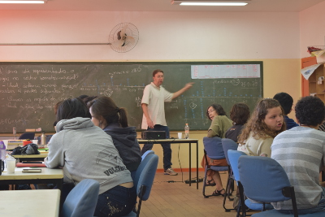
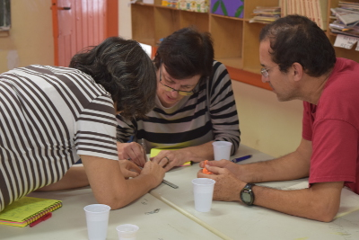
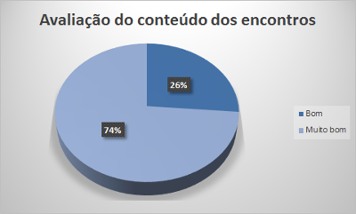

NeuroMat realiza encontro para fortalecer diálogo entre a educação básica e a ciência contemporânea
Apr 30, 2015
Nos últimos dias 11 e 25 de abril, cerca de 30 educadores dedicaram seus sábados para realizar o primeiro Ciclo de Atividades do CEPID NeuroMat para Professores da Escola Básica (Matemática, Ciências e Áreas Interessadas). A ação é resultado de uma parceria da Escola Municipal de Ensino Fundamental Desembargador Amorim Lima com o Centro de Pesquisa, Inovação e Difusão em Neuromatemática (CEPID NeuroMat), criado em 2013 e financiado pela Fundação de Amparo à Pesquisa do Estado de São Paulo (FAPESP). Por meio de projetos como este, o CEPID NeuroMat pretende estabelecer um diálogo permanente entre a educação básica e a ciência contemporânea, especialmente a ponta da pesquisa científica.
 |
Os dois encontros foram realizados sob a forma de oficina com o título: “Estatística e Neurociências para a sala de aula: construção de práticas pedagógicas”. Cada um deles teve duração de seis horas para a troca de saberes e informações sobre sequências didáticas interdisciplinares.
“Essa foi uma oportunidade importante de fazer a ponte entre a universidade e a escola”, avaliou André Frazão Helene, professor do Instituto de Biologia (IB) da Universidade de São Paulo (USP) e responsável pelo conteúdo do segundo dia de atividades. “A receptividade dos presentes foi muito boa e, com isso, vemos que é possível levar o ensino de neurociências à escola”, diz.
“A discussão de estatística foi centrada em alguns tópicos que poderiam e deveriam fazer parte da escola básica, com atividades que podem ser encaradas como de natureza interdisciplinar”, apontou Lisbeth Kaiserlian Cordani, professora aposentada do Instituto de Matemática e Estatística (IME) da USP e coordenadora do primeiro dia de atividades. “O ambiente foi muito cordial, e a troca entre a audiência se mostrou proveitosa a todos.”
A oficina que o CEPID NeuroMat promoveu foi acompanhada por professores e bolsistas do Programa Institucional de Bolsas de Iniciação à Docência (PIBID), coordenados pelas professoras do IB Daniela Scarpa e Suzana Ursi. A participação do PIBID tem como objetivo contribuir no registro, avaliação, melhoria e construção de novas iniciativas.
Estatística para Todos
No primeiro sábado (11 de abril), Lisbeth Cordani aplicou sua experiência em educação estatística levantando estratégias sobre como os professores podem abordar noções sobre variabilidade e incerteza com estudantes do segundo ciclo do Fundamental e do Ensino Médio. Parte de seu trabalho para levar a estatística à escola básica pode ser vista no livro Estatística para todos - Atividades para sala de aula, editado pelo Centro de Aperfeiçoamento de Ensino da Matemática do IME. Mais sobre o trabalho de difusão científica de Cordani e seu impacto no NeuroMat pode ser visto no Newsletter NeuroMat de fevereiro, aqui.
 |
A primeira sequência didática discutida diz respeito ao problema da medida e da representação de dados coletados. Nela, Lisbeth Cordani incentivou os educadores a trabalharem com os estudantes a medida do palmo da mão — fácil e rápida de ser obtida — como pano de fundo para uma representação gráfica de dados e o entendimento de conceitos-chave da estatística, como média, mediana e amplitude, de modo a abordar a variabilidade já no início da vida acadêmica da criança e do adolescente.
Outra atividade desenvolvida foi a estimação do tamanho de uma população de peixes em um lago, pelo uso da técnica de captura e recaptura. Lisbeth Cordani levou um saco plástico com bolinhas de isopor, representando um lago com muitos peixes (as bolinhas). O público foi, então, convidado a estimar o número de peixes no lago, por meio de um procedimento simples. A técnica de estimação do número de animais é utilizada até hoje, principalmente em áreas como ecologia e pode ser transposta a turmas de ensino básico sem muita dificuldade, na avaliação da educadora. Neurociências e matemática
No segundo dia de formação e debate, Frazão convidou o público a conhecer duas dinâmicas que envolvem o conhecimento de neurociências e matemática. Na primeira delas, Frazão explicou que as regiões do cérebro que registram as informações do tato são proporcionais ao número de receptores pelo corpo. Assim, em um experimento simples, que pode ser executado em sala de aula, é possível perceber que a região do cérebro para a sensibilidade do antebraço tem praticamente o mesmo tamanho que a região para a sensibilidade dos dedos. Esse resultado de mapeamento do cérebro de maneira indireta, segundo o pesquisador, se aproxima bastante do que o conhecimento científico sobre o sistema nervoso já construiu.
O segundo experimento abordado por Frazão trata do ponto cego do olho humano, que pode ser identificado e representado com auxílio de técnicas matemáticas simples, como a semelhança de triângulos, assunto do currículo da educação básica. Nas duas atividades, foram utilizados gráficos e medidas estatísticas discutidos no primeiro encontro. Receptividade e novos encontros
 |
A receptividade dos educadores participantes foi positiva, conforme formulário de opinião respondido ao fim do segundo encontro por 19 educadores. Ao todo, 14 deles avaliaram o conteúdo como “muito bom”, e cinco, como “bom”.
Os próximos passos são a complementação do encontro em mais oito horas de trabalho para os educadores interessados em desenvolver práticas interdisciplinares, levando a ciência da academia para a sala de aula da rede pública. Planejamento de atividades
As atividades de 11 e 25 de abril representam um esforço piloto no trabalho de difusão científica. A partir de uma sequência de reuniões periódicas, das quais devem participar professores de educação básica e ensino superior, além de bolsistas do PIBID, o material das atividades e a dinâmica de oficina devem ser avaliadas e aperfeiçoadas, no sentido de contribuir com as práticas pedagógicas em sala de aula e a aproximação entre os desafios da pesquisa científica de ponta — um ambiente de incertezas e exploração — e a própria vivência do conhecimento por parte dos estudantes.
O CEPID NeuroMat pretende realizar vídeos de curta duração sobre temáticas pertinentes ao currículo escolar, a partir do saber acumulado a partir das iniciativas de difusão científica.
Este texto faz parte do Newsletter NeuroMat #15. Leia mais aqui
Share on Twitter Share on Facebook| NeuroCineMat |
|---|
|
Featuring this week: |
| Newsletter |
|---|
|
Stay informed on our latest news! |
| Follow Us on Facebook |
|---|
| Podcast A Matemática do Cérebro |
|---|

|
| NeuroMat Brachial Plexus Injury Initiative |
|---|

|
| Neuroscience Experiments System |
|---|

|
| NeuroMat Parkinson Network |
|---|

|
| NeuroMat's scientific-dissemination blog |
|---|
|
|